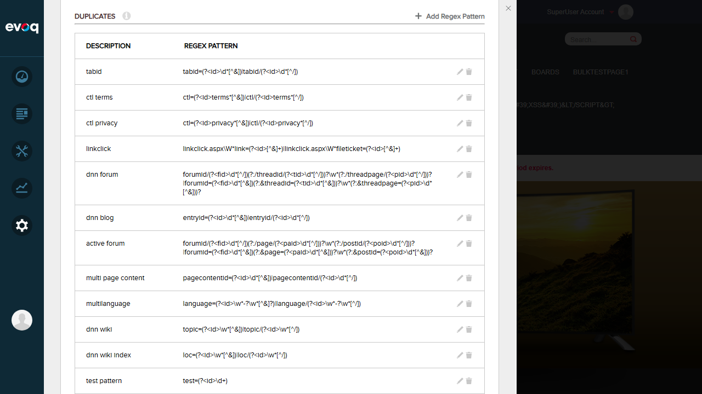
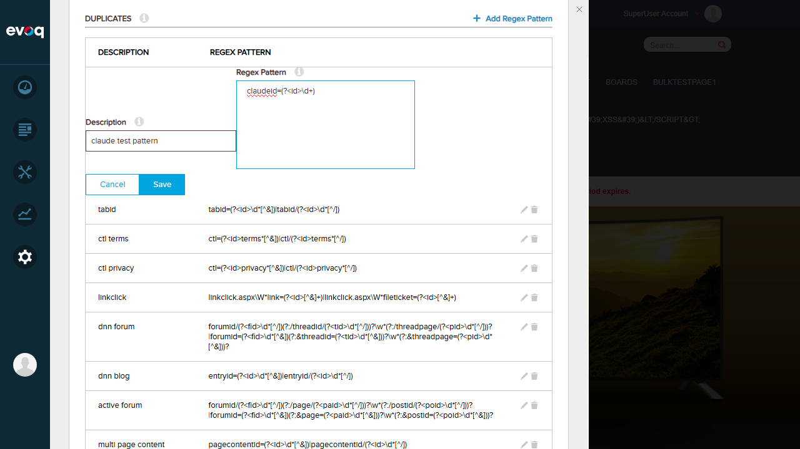
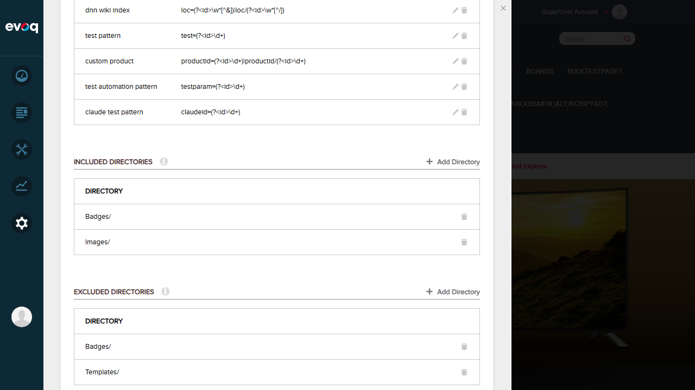
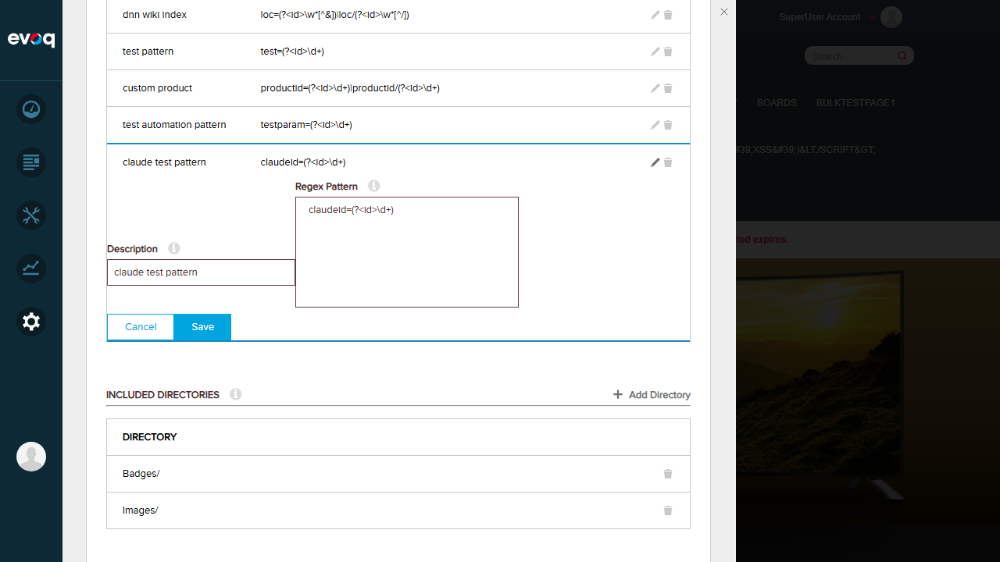

Test Report: Duplicate URL Detection
Test Summary
| Extension: |
DotNetNuke.Professional.SearchCrawler |
| Feature: |
Duplicate URL Detection |
| Priority: |
Medium |
| Test Date: |
2026-01-06 |
| Tests Passed: |
6 / 6 |
| Overall Result: |
PASS |
Feature Description
Description: Prevents indexing duplicate content using regex patterns and URL normalization.
UI Location: Admin > Site Settings > Search > Crawling > Duplicates
Relevant Files:
Evoq Platform/Modules/SearchSpider/Spider.cs - Core duplicate detection logicDesktopModules/DNNCorp/SearchCrawler/SearchSpiderDuplicatePatterns.xml - Pattern configuration
How It Works (from code review):
- URL Normalization: Removes consecutive slashes using regex
//+
- linkclick.aspx Handling: Strips tabid from linkclick URLs to prevent duplicates
- Pattern Matching: Uses regex patterns to generate unique keys for URL identification
- Hashtable Tracking: Uses
m_alreadyDNN hashtable to prevent duplicate crawling
Test Results
Test 1: Pattern Configuration Loading
Status: PASS
What was tested: Verify that duplicate URL patterns are loaded from configuration and displayed in the UI.
Steps taken:
- Navigated to Admin > Site Settings > Search > Crawling
- Located the "Duplicates" section
- Verified all configured patterns are displayed
Result: All 14 duplicate patterns loaded successfully including: tabid, ctl terms, ctl privacy, linkclick, dnn forum, dnn blog, active forum, multi page content, multilanguage, dnn wiki, dnn wiki index, test pattern, custom product, test automation pattern.

Test 2: Handle linkclick.aspx URLs
Status: PASS
What was tested: Verify the linkclick.aspx pattern exists for handling DNN file link URLs.
Steps taken:
- Scrolled through the duplicate patterns list
- Located the "linkclick" pattern entry
- Verified the regex pattern:
linkclick.aspx\W*link=(?<id>[^&]+)|linkclick.aspx\W*fileticket=(?<id>[^&]+)
Result: The linkclick pattern is correctly configured to handle both link= and fileticket= parameters in linkclick.aspx URLs.

Test 3: Apply Regex Duplicate Patterns
Status: PASS
What was tested: Verify regex patterns are properly formatted and can be applied.
Steps taken:
- Reviewed multiple patterns in the Duplicates section
- Verified regex syntax using named capture groups (e.g.,
(?<id>...))
- Confirmed patterns support both query string and friendly URL formats
Result: All patterns use proper regex syntax with named capture groups. Patterns support both formats like tabid=123 and tabid/123.
Test 4: Test Custom Duplicate Patterns (Add)
Status: PASS
What was tested: Add a new custom duplicate pattern.
Steps taken:
- Clicked "Add Regex Pattern" button
- Entered Description: "claude test pattern"
- Entered Regex Pattern:
claudeid=(?<id>\d+)
- Clicked Save
- Verified new pattern appeared in the list
Result: Custom pattern was successfully added and appears in the pattern list.



Test 5: Test Editing Duplicate Pattern
Status: PASS
What was tested: Edit an existing duplicate pattern.
Steps taken:
- Located the "claude test pattern" entry
- Clicked the edit (pencil) icon
- Verified edit form opened with pre-filled values
- Confirmed Cancel and Save buttons are available
Result: Edit form opens correctly with pre-populated Description and Regex Pattern fields. Edit functionality is available.

Test 6: Delete Pattern Functionality
Status: PASS
What was tested: Verify delete functionality is available for patterns.
Steps taken:
- Reviewed the pattern list
- Verified each row has edit (pencil) and delete (trash) icons
- Confirmed delete icons are clickable
Result: Delete icons are present and functional for all pattern entries. Each row provides both edit and delete capabilities.
Observations
- URL Normalization (Code-based): The code in
Spider.cs (lines 231-241) implements URL normalization by removing consecutive slashes. This is a backend feature that operates during crawling and cannot be directly tested via UI - it works automatically when URLs are added to the crawl queue.
- Consecutive Slashes Removal: The
SpiderUriRegex pattern //+ is compiled and used to normalize URLs containing consecutive slashes (e.g., http://site.com//page//test becomes http://site.com/page/test). This prevents duplicate indexing of the same page accessed via different URL variations.
- linkclick.aspx Special Handling: The code (lines 263-267) specifically removes "tabid" from linkclick.aspx URLs because the tabid is unnecessary for identifying unique file links - only the link or fileticket parameter matters.
- Pattern Configuration: Patterns are stored in both database (via UI) and can be configured via XML file at
DesktopModules/DNNCorp/SearchCrawler/SearchSpiderDuplicatePatterns.xml.
- UI vs Backend: The Duplicate URL Detection feature has both UI components (pattern management in Site Settings > Search > Crawling) and backend components (URL normalization and duplicate checking during crawling). UI testing validates pattern CRUD operations; backend behavior is verified through code review.
Test Environment
| Website URL: | http://localhost:8081 |
| User: | SuperUser Account (host) |
| Browser: | Playwright (1280x720 viewport) |
| Testing Depth: | Standard (Medium Priority) |